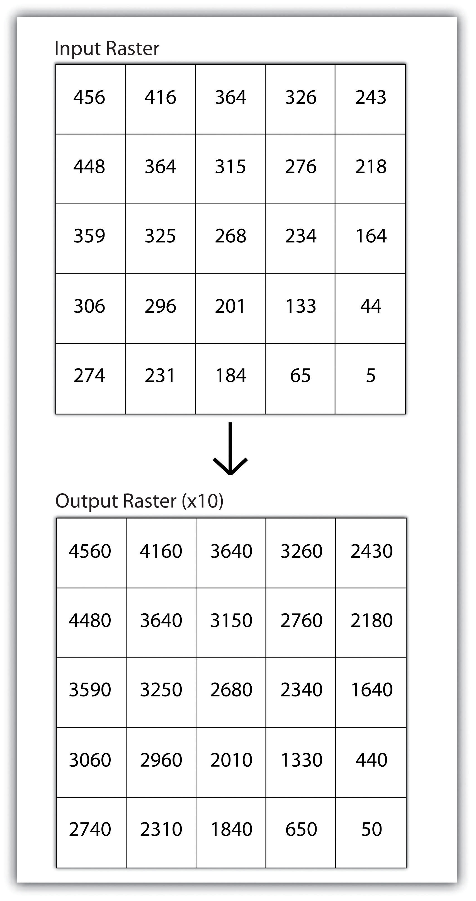
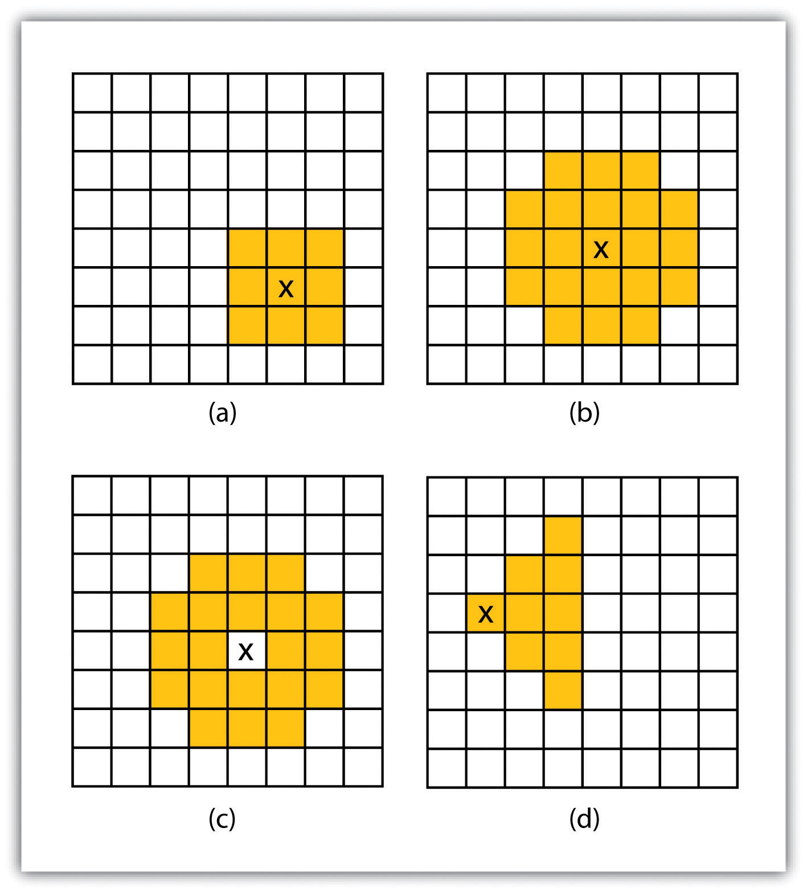
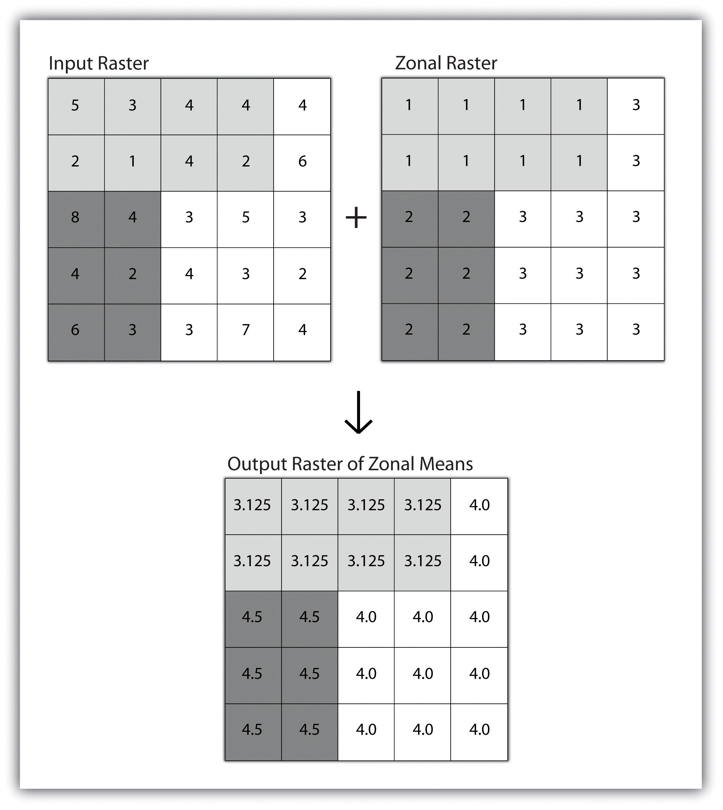
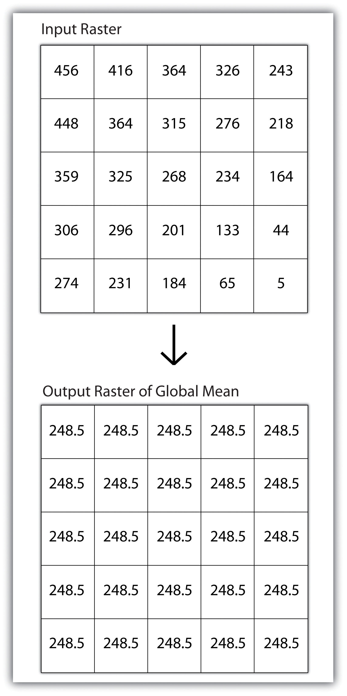

Raster analyses can be undertaken on four different scales of operation: local, neighborhood, zonal, and global. Each of these presents unique options to the GIS analyst and are presented here in this section.
Local operationsOperations performed on a single, target cell. can be performed on single or multiple rasters. When used on a single raster, a local operation usually takes the form of applying some mathematical transformation to each individual cell in the grid. For example, a researcher may obtain a digital elevation model (DEM) with each cell value representing elevation in feet. If it is preferred to represent those elevations in meters, a simple, arithmetic transformation (original elevation in feet * 0.3048 = new elevation in meters) of each cell value can be performed locally to accomplish this task.
When applied to multiple rasters, it becomes possible to perform such analyses as changes over time. Given two rasters containing information on groundwater depth on a parcel of land at Year 2000 and Year 2010, it is simple to subtract these values and place the difference in an output raster that will note the change in groundwater between those two times (Figure 8.5 "Local Operation on a Raster Dataset"). These local analyses can become somewhat more complicated however, as the number of input rasters increase. For example, the Universal Soil Loss Equation (USLE) applies a local mathematical formula to several overlying rasters including rainfall intensity, erodibility of the soil, slope, cultivation type, and vegetation type to determine the average soil loss (in tons) in a grid cell.
Figure 8.5 Local Operation on a Raster Dataset
Tobler’s first law of geography states that “everything is related to everything else, but near things are more related than distant things.” Neighborhood operationsOperations performed on a central, target cell and surrounding cells. represent a group of frequently used spatial analysis techniques that rely heavily on this concept. Neighborhood functions examine the relationship of an object with similar surrounding objects. They can be performed on point, line, or polygon vector datasets as well as on raster datasets. In the case of vector datasets, neighborhood analysis is most frequently used to perform basic searches. For example, given a point dataset containing the location of convenience stores, a GIS could be employed to determine the number of stores within 5 miles of a linear feature (i.e., Interstate 10 in California).
Neighborhood analyses are often more sophisticated when used with raster datasets. Raster analyses employ moving windows, also called filters or kernels, to calculate new cell values for every location throughout the raster layer’s extent. These moving windows can take many different forms depending on the type of output desired and the phenomena being examined. For example, a rectangular, 3-by-3 moving window is commonly used to calculate the mean, standard deviation, sum, minimum, maximum, or range of values immediately surrounding a given “target” cell (Figure 8.6 "Common Neighborhood Types around Target Cell “x”: (a) 3 by 3, (b) Circle, (c) Annulus, (d) Wedge"). The target cellCell found in the center of the 3-by-3 moving window. is that cell found in the center of the 3-by-3 moving window. The moving window passes over every cell in the raster. As it passes each central target cell, the nine values in the 3-by-3 window are used to calculate a new value for that target cell. This new value is placed in the identical location in the output raster. If one wanted to examine a larger sphere of influence around the target cells, the moving window could be expanded to 5 by 5, 7 by 7, and so forth. Additionally, the moving window need not be a simple rectangle. Other shapes used to calculate neighborhood statistics include the annulus, wedge, and circle (Figure 8.6 "Common Neighborhood Types around Target Cell “x”: (a) 3 by 3, (b) Circle, (c) Annulus, (d) Wedge").
Figure 8.6 Common Neighborhood Types around Target Cell “x”: (a) 3 by 3, (b) Circle, (c) Annulus, (d) Wedge
Neighborhood operations are commonly used for data simplification on raster datasets. An analysis that averages neighborhood values would result in a smoothed output raster with dampened highs and lows as the influence of the outlying data values are reduced by the averaging process. Alternatively, neighborhood analyses can be used to exaggerate differences in a dataset. Edge enhancement is a type of neighborhood analysis that examines the range of values in the moving window. A large range value would indicate that an edge occurs within the extent of the window, while a small range indicates the lack of an edge.
A zonal operation is employed on groups of cells of similar value or like features, not surprisingly called zones (e.g., land parcels, political/municipal units, waterbodies, soil/vegetation types). These zones could be conceptualized as raster versions of polygons. Zonal rasters are often created by reclassifying an input raster into just a few categories (see Section 8.2.2 "Neighborhood Operations"). Zonal operations may be applied to a single raster or two overlaying rasters. Given a single input raster, zonal operations measure the geometry of each zone in the raster, such as area, perimeter, thickness, and centroid. Given two rasters in a zonal operation, one input raster and one zonal raster, a zonal operation produces an output raster, which summarizes the cell values in the input raster for each zone in the zonal raster (Figure 8.7 "Zonal Operation on a Raster Dataset").
Figure 8.7 Zonal Operation on a Raster Dataset
Zonal operations and analyses are valuable in fields of study such as landscape ecology where the geometry and spatial arrangement of habitat patches can significantly affect the type and number of species that can reside in them. Similarly, zonal analyses can effectively quantify the narrow habitat corridors that are important for regional movement of flightless, migratory animal species moving through otherwise densely urbanized areas.
Global operationsOperations performed over the entire extent of a dataset. are similar to zonal operations whereby the entire raster dataset’s extent represents a single zone. Typical global operations include determining basic statistical values for the raster as a whole. For example, the minimum, maximum, average, range, and so forth can be quickly calculated over the entire extent of the input raster and subsequently be output to a raster in which every cell contains that calculated value (Figure 8.8 "Global Operation on a Raster Dataset").
Figure 8.8 Global Operation on a Raster Dataset
